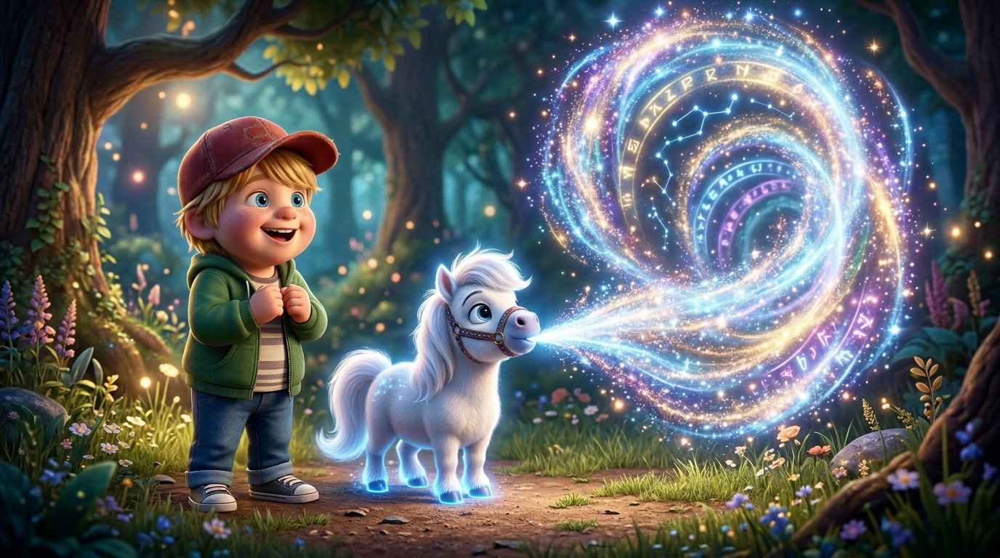
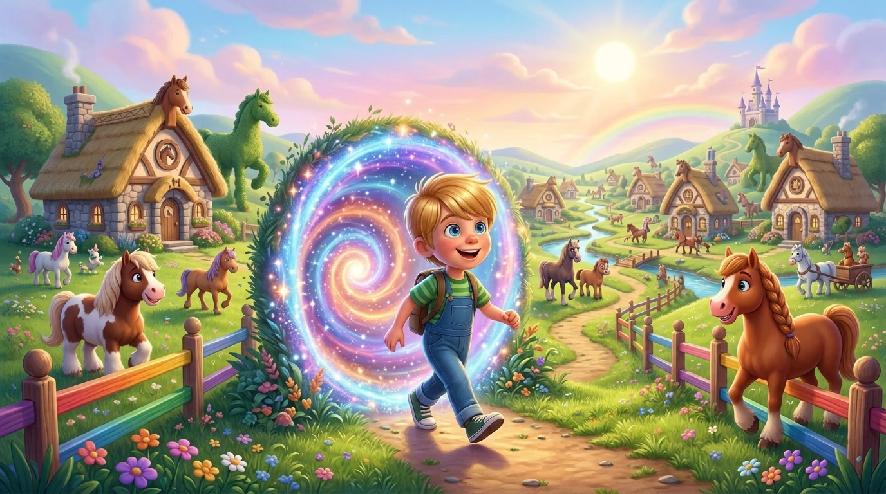
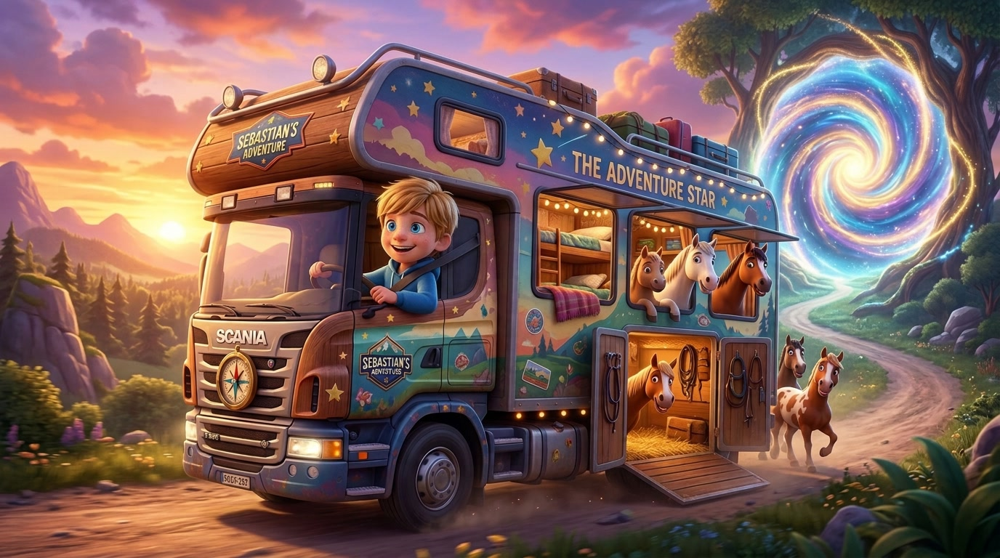
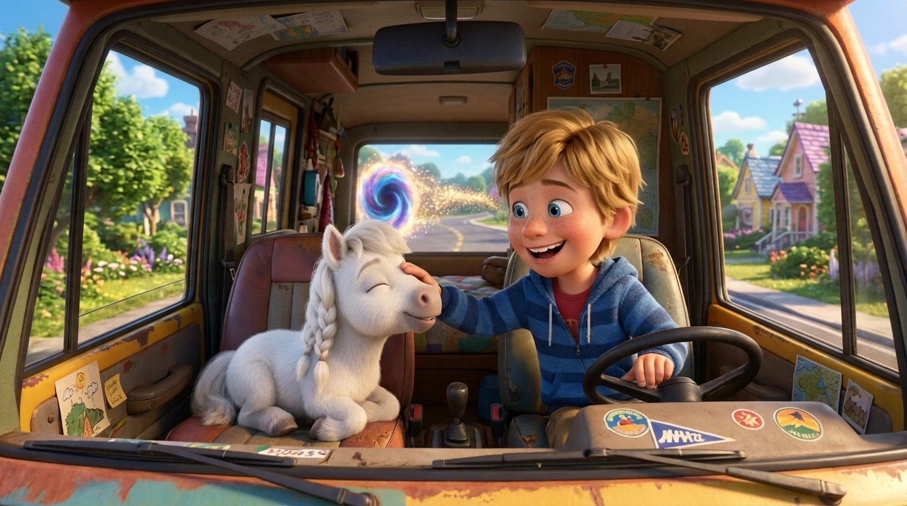

Ascolta la fiaba di Seby e del cavalletto magico Marie narrata in italiano o in inglese con sottofondo di pianoforte!

In una radura incantata, Sebi incontra un misterioso cavallino in miniatura di nome Marie. Marie non è un semplice puledro: fa un grande respiro e sputa una potente folata d'aria che si trasforma in un tunnel dimensionale a forma di vortice luminoso!

Attraversato il vortice di comete, Sebi sbarca nel meraviglioso Mondo dei Cavalli. Qui ogni casa ha la forma di un ferro di cavallo e i cavalli sono completamente liberi di correre e fare tutto ciò che desiderano. Eppure, ascoltando Sebi, decidono che vogliono visitare il mondo degli umani!

Per portarli tutti con sé, Sebi trova un veicolo straordinario: un gigante camion camper, perfetto sia per viverci dentro come una vera casa, sia per trasportare comodamente tutta la mandria. Sebi accende il motore e guida a tutta birra verso il tunnel magico!

Prima di uscire dal tunnel, Sebi si accorge che all'appello manca proprio Marie, il piccolo cavalletto creatore del vortice! Sebi fa un'inversione a U, lo carica a bordo con sé e Marie fa richiudere il tunnel per sempre. Ora vivono tutti felici e contenti nel mondo degli umani!
Guarda il film animato completo di 40 secondi (4 atti × 10s) narrato in italiano dell'avventura di Seby, del cavalletto Marie e del Camion Camper dei Cavalli!
gemini-omni-flash-preview • Durata: 40s (4 Atti × 10s) • 720p HD • Narrato in Italiano
Papà Riccardo: «Ermete, abbiamo una storia per te da parte di Sebi da mettere nel film Kids' Own Stories, quindi sbobbina l'audio e pronto... vai Sebi, raccontaci!»
Sebi: «Io ero come in un posto con un cavalletto e poi il cavalletto ha spuntato...»
Papà Riccardo: «Cavalletto vuol dire un piccolo cavallo?»
Sebi: «Sì, ha sputato dell'aria che ha fatto un tunnel, l'ho passato e poi ho trovato un mondo dei cavalli e poi lì ho trovato un camion dove potevo portare tutti i cavalli e ci potevo anche vivere. Ho passato il tunnel...»
Papà Riccardo: «Tipo un camion camper, diciamo, che porta i cavalli e ci vivi dentro?»
Sebi: «Ok sì, ho passato il tunnel così con il camion e poi ero felice. E poi ho detto: ma poi il mio camion non era pieno, cioè mancava un cavallo! E poi il cavallo che ha fatto il tunnel l'ho preso, l'ho messo dentro, e poi l'ho fatto chiudere il tunnel... e poi ha chiuso il tunnel, e poi siamo felici per sempre!»
Papà Riccardo: «Fantastico! Come si chiama questo cavallo che ha fatto il tunnel e poi ha chiuso il tunnel?»
Sebi: «Si chiama Marie! Marie come nome francese di Maria.»
Papà Riccardo: «E dimmi una cosa: cosa c'era dentro quel tunnel, come lo vedi quel tunnel?»
Sebi: «È come un tunnel... come un vortice che lo passi e poi passi in un altro mondo.»
Papà Riccardo: «Ah, tipo un vortice dimensionale, una cosa fantasy! Wow, ok! E nell'altro mondo, parlami del mondo dei cavalli: cosa vedi nel mondo dei cavalli?»
Sebi: «Quasi tutto è fatto di cavalli: le case, le giacche sono fatte di pelo di cavalli già morti... e loro potevano fare tutto quello che volevano! Ma poi anche nel mondo dei cavalli hanno voluto andare via nel mondo delle persone. E così sono andato nel camion e poi sono andate nel mondo umano.»
Papà Riccardo: «Ok perfetto, penso che ne abbiamo abbastanza. Grazie Sebi!»